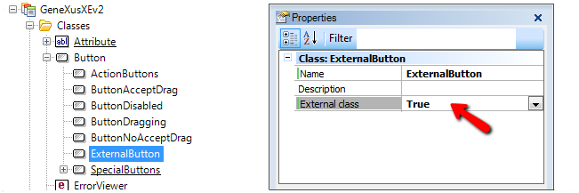
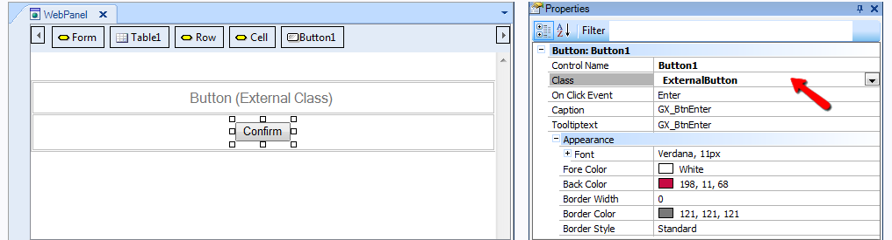
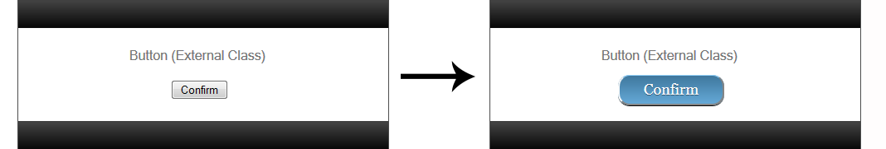

There are some situations where we want to customize the style and format of our Web Panels using external CSS files. To do so GeneXus provides us the External class property. This article shows an example on how to use this property to define the button style of a Web Panel. Step 1 - Creating the External ClassLet's start by creating the following button class and set the enabled property of the External Class on True.  Step 2 - Creating and importing of the CSS fileNow we need to define the CSS file and save it into the Target Environment Directory (<KB Directory>\<Environment Directory>\web ) . You may add the CSS as File object to the KB and use Extract property in order to let GeneXus handle them too. Example:
.ExternalButton{
border-top: 1px solid #96d1f8;
background: #65a9d7;
background: -webkit-gradient(linear, left top, left bottom, from(#3e779d), to(#65a9d7));
background: -webkit-linear-gradient(top, #3e779d, #65a9d7);
background: -moz-linear-gradient(top, #3e779d, #65a9d7);
background: -ms-linear-gradient(top, #3e779d, #65a9d7);
background: -o-linear-gradient(top, #3e779d, #65a9d7);
padding: 5.5px 26px;
-webkit-border-radius: 14px;
-moz-border-radius: 14px;
border-radius: 14px;
-webkit-box-shadow: rgba(0,0,0,1) 0 1px 0;
-moz-box-shadow: rgba(0,0,0,1) 0 1px 0;
box-shadow: rgba(0,0,0,1) 0 1px 0;
text-shadow: rgba(0,0,0,.4) 0 1px 0;
color: white;
font-size: 18px;
font-family: Georgia, Serif;
text-decoration: none;
vertical-align: middle;
}
.ExternalButton:hover {
border-top-color: #28597a;
background: #28597a;
color: #ccc;
}
.ExternalButton:active {
border-top-color: #1b435e;
background: #1b435e;
}
Step 3 - Creating the Panel for WebCreate the Web Panel that will be used to display the button.  And then add a reference to the CSS in the Panel's header by writing the following in the Start event of the Web Panel or it's What is a Master Page.
Event Start
Form.HeaderRawHTML += '<link rel="stylesheet" type="text/css" href="MyCssFileName.css" />'
Endevent
Step 4 - Done!
|
| Backlinks |
| External class property |